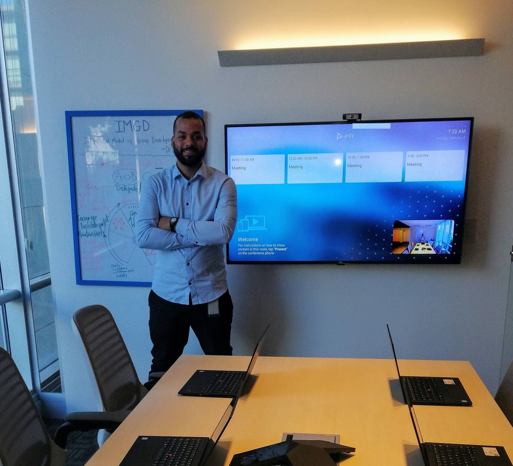

Sobre Mí

Soy de Venezuela y he vivido en Argentina durante 7 años. Durante este tiempo, he tenido la oportunidad de adaptarme a una nueva cultura y enriquecerme con diversas experiencias.
Mi objetivo es completar la Licenciatura en Gestión de Tecnología de la Información en la UADE, donde espero adquirir las habilidades necesarias para enfrentar los desafíos del mundo tecnológico actual.
Estoy comprometido con mi crecimiento académico y profesional, y aspiro a contribuir de manera significativa en el campo de la tecnología, trabajando en proyectos que mejoren la vida de las personas y optimicen procesos en las empresas.